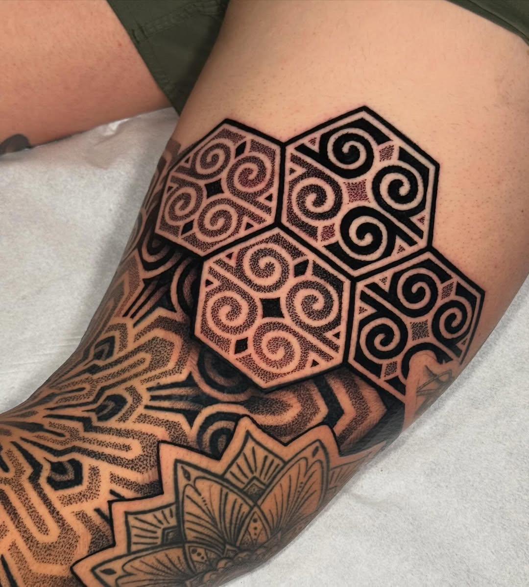
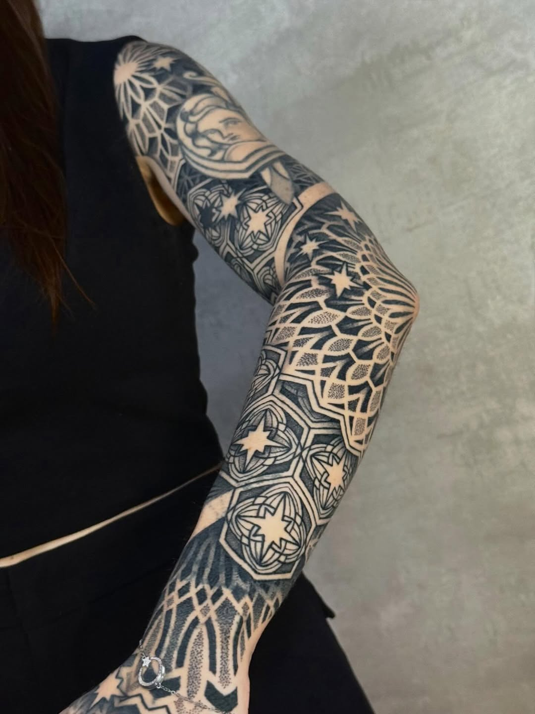

The Name, The Shift, The Geometry
The name "Suezo" arrived by accident — a cousin's joke roughly twenty years ago, inspired by a cartoon character. It stuck. But the identity behind it has evolved dramatically. Felippe Whady Rebehy began his tattooing journey in 2010 working in new school style — bold, colorful, exaggerated. Then, around 2014, something shifted.
He encountered the work of Marco Galdo — precise, meditative dotwork that spoke in pure geometry. It was a revelation. The switch wasn't gradual; it was a complete recalibration of how he saw the craft.
"I saw Marco Galdo's dotwork and it was like a door opened. I knew that was the language I wanted to speak with my needle."
Building Geometry Where None Existed
Presidente Prudente sits six hours from São Paulo's capital — a city rooted in agriculture and industry, not in the underground art scenes that typically birth tattoo movements. When Suezo arrived on the scene, the local tattoo community was small and not particularly welcoming to someone pushing into uncharted territory.
He didn't retreat. He pushed through. And in doing so, he became something of a pioneer — the artist who introduced geometric tattooing to his city. What was once a solitary practice has, through the force of social media and the universal language of visual precision, begun to grow.
"There were very few artists when I started, and the scene wasn't welcoming. But I was determined. I believe I brought geometric tattooing to this city — and now, thanks to social media, it's growing."
From Skin to Software and Back Again
Suezo's workflow is a hybrid of the analog and the digital — a process that honors both the body and the blueprint. It begins with the most intimate step: drawing directly on the client's skin. This isn't just a sketch — it's a conversation between artist and anatomy, ensuring that every line respects the unique topography of the person wearing it.
From there, the process moves through contact paper measurements, into software for development and refinement, and back to the body on tattoo day — where the freehand drawing is redone, stencils placed with surgical care, and the design finally committed to skin.
It's a method that refuses to treat the body as a flat canvas. Every curve, every muscle, every asymmetry is part of the design.


Sacred Geometry, Secular Eyes
There's a tension in geometric tattooing between the sacred and the everyday — and Suezo lives in both worlds. He has a deep love for sacred geometry, the kind that has adorned temples and manuscripts for millennia. But his inspiration doesn't stop at the mystical.
He finds geometry in mall floors and church stained glass — in the patterns that surround us but that we rarely pause to see. This dual vision — the spiritual and the mundane, both rendered in precise lines and dots — is what gives his work its distinctive voice.
"I love sacred geometry, but I draw from everyday life too — the pattern on a mall floor, the light through stained glass. Geometry is everywhere if you know how to look."
A Brazilian Palette
Brazil's cultural diversity is one of its most defining features — a country woven from Indigenous, African, European, and Asian threads. Suezo draws from this richness, though he's candid about where he is in that exploration.
He hasn't yet incorporated specific Brazilian cultural references into his geometric work, but the intention is there. The desire to dig deeper into his own heritage and translate it through the lens of geometry is a project for the future — one that promises to add another layer to an already distinctive practice.
The Creative Negotiation
Every tattoo is a negotiation between artist and client — and Suezo has found a rhythm that honors both sides. He values creative freedom, but he's equally attentive to what the person in the chair wants. The conversation starts with fundamentals: what kind of geometry? How complex? Or how minimal?
It's a collaborative process, not a transaction. The client brings a vision; Suezo brings the technical language to translate it into something that lives on the body.
Studio Solitude, Convention Energy
When it comes to where he works, Suezo has a clear preference: the quiet of his private studio. Long sessions demand focus, and the controlled environment of a studio provides that. But he doesn't dismiss the energy of conventions.
He enjoys the atmosphere — the buzz, the community, the chance to meet artists he admires. Awards aren't his motivation, but the human connections forged at these events are invaluable.
The Body Behind the Needle
Tattooing is physically demanding — hours of standing, focusing, holding a steady hand. Suezo has developed a discipline to match: an exercise routine, a lighter diet during sessions, and a commitment to eating real food during breaks rather than surviving on coffee.
He extends this philosophy to his clients as well, advising them to eat well, hydrate, and moisturize for a week before their session. The body is the canvas, and it deserves preparation.
"I share my mindset with clients — eat well, hydrate, moisturize a week before. Your body is the canvas. Treat it right."
What's Next
Suezo's sketchbook — both physical and digital — is full of ideas. Projects saved, quick sketches, concepts waiting for the right body. Software has expanded his possibilities to what he describes as endless. The tools have evolved, and so has the scope of what's possible.
The future, for him, is a series of doors still opening.
Finding the OMF Family
For an artist who built geometric tattooing in a city where it didn't exist, finding a global community matters. Suezo speaks about the OMF Geometry network with genuine appreciation — it's a bridge connecting geometric artists across continents, a shared language that transcends borders.
He's already in touch with several artists in the community and is looking forward to meeting them in person. For someone who carved a path alone, the prospect of walking it alongside others is meaningful.
"The OMF community is very important. It connects geometric artists worldwide. I'm already in touch with several of them, and I'm looking forward to meeting in person."